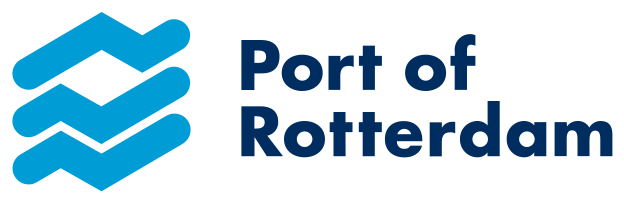
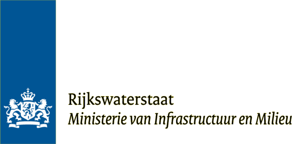
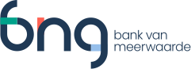
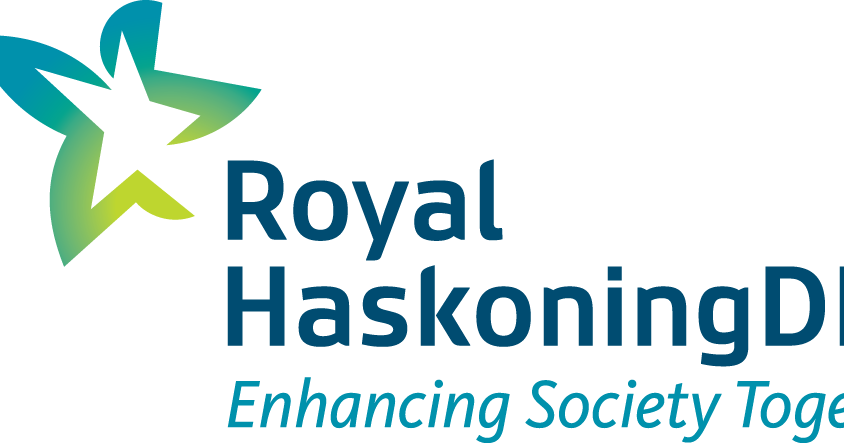

Tim de Klijn, PhD. Freelance data & AI consultant, building for production.
Data platforms, MLOps, generative AI and agents. Based in Utrecht, the Netherlands.
About
Tim holds a PhD in Chemistry from Utrecht University and has spent 8+ years consulting across the data spectrum: data science, ML engineering, data engineering and AI engineering. Based in Utrecht, the Netherlands, he works with clients through his own practice: TdKlijn Data.
His work spans the full stack: from data ingestion and pipelines to model serving, monitoring and alerting using Python, Go, Kubernetes, Terraform/OpenTofu and CI/CD as standard tooling. He builds developer platforms and user-facing products, always with value delivery in mind. Clients include NS, the Port of Rotterdam Authority, Rijkswaterstaat, Essent, in the financial, transport, energy and logistics sectors, both public and state-owned.
In recent years the focus has shifted to generative AI, LLMs and agentic workflows. Tim initiated a sovereign AI platform at Dataworkz: a Kubernetes platform at a European cloud provider, fully defined in code, with an AI gateway, RAG, PII scanning, smart model routing and per-user monitoring. He builds AI agents that automate processes and make teams more productive and takes them all the way to production.
When not building data and AI products, Tim likes to go to rock/metal concerts and festivals or read a good book.
What I do
Data platforms & pipelines
Cloud data platforms, ingestion from dozens of sources, modelling and orchestration with dbt, Snowflake, Databricks, Airflow and PySpark: built to scale and easy to operate.
MLOps & machine learning platforms
Production ML end to end: model serving, experiment tracking with MLflow, monitoring, alerting and drift detection, with CI/CD as standard.
Generative AI & agents
LLM applications, RAG, agentic workflows and model hosting including AI gateways with authentication, PII scanning, smart model routing and usage monitoring.
Cloud & infrastructure
Kubernetes platforms on Azure, AWS and European providers, fully managed as code with Terraform/OpenTofu, ArgoCD and FluxCD.
Skills
- Data & analytics
- SQL, Airflow, Argo Workflows, Databricks, Snowflake, dbt, PySpark
- Machine learning & AI
- MLOps, MLflow, Azure ML, Computer Vision, GenAI, Agentic Coding
- Software development
- Python, Go, Rust, Elixir
- Cloud & infrastructure
- Docker, Kubernetes, KServe, Agent Router, ArgoCD, FluxCD, Azure, AWS, OpenTofu, CI/CD, Scaleway
Companies I've worked for




Contact
Working on something in data or AI? info@tdklijndata.nl